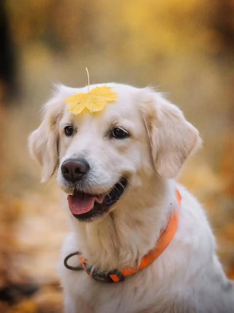
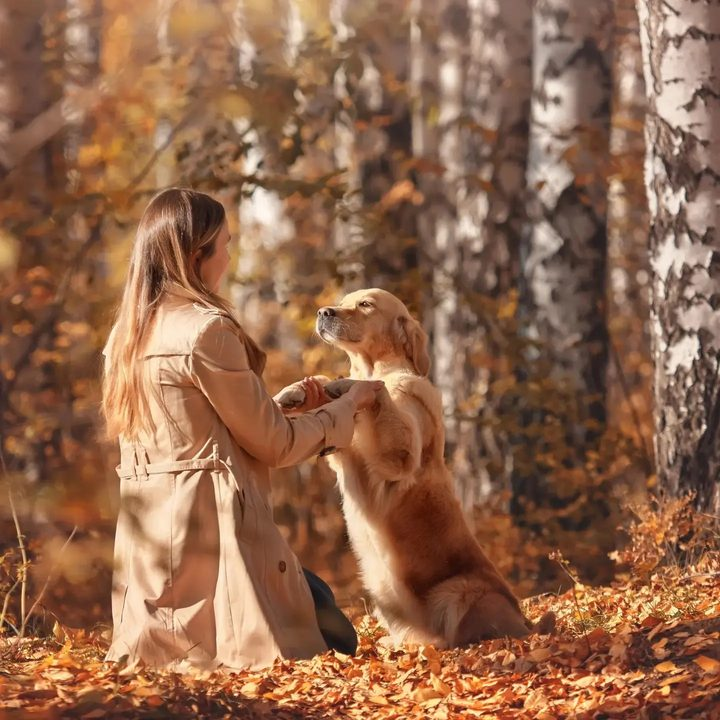

Онлайн · в своём темпе · 8 уроков
Камера с нуля
Для тех, у кого есть хорошая камера, а снимки всё равно хуже, чем с телефона. Разбираем, что делают эти колёсики, и почему автоматический режим вас подводит именно на собаке.
Для кого
- Камера лежит без дела, потому что страшно
- Снимаете в авторежиме и не понимаете, что менять
- Хотите снимать свою собаку лучше, чем сейчас
Что нужно
- Зеркалка или беззеркалка со сменным объективом
- Компьютер и Lightroom
- Три-четыре часа в неделю
Такие кадры вы сможете снимать сами




Урок 1Три колёсикаВыдержка, диафрагма, ISO — без формул. Что крутить, когда собака бежит на вас.
Урок 2ФокусОдна точка против следящего. Как попадать в глаз, а не в кончик носа.
Урок 3СветГде встать относительно солнца. Почему полдень — плохо, а контровой — почти всегда хорошо.
Урок 4КомпозицияЧто делать с фоном, куда девать поводок, зачем оставлять воздух перед мордой.
Урок 5ОбъективыЧто купить в первую очередь, а на что не тратить деньги ближайшие два года.
Урок 6RAWЗачем снимать в формате, который весит в шесть раз больше, и что он спасает.
Урок 7Обработка за вечерLightroom: базовый набор движков, свой пресет, экспорт под печать и под сеть.
Урок 8Разбор ваших работПрисылаете серию — получаете письменный разбор и план на следующие три съёмки.
14 900 ₽доступ навсегда
Записаться на курс →